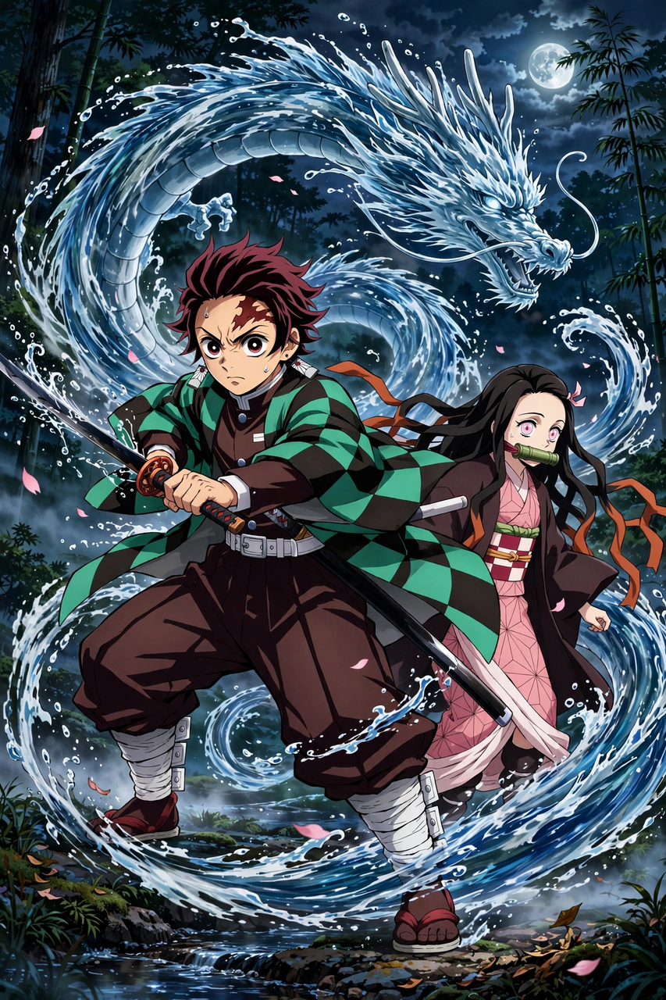

| Demon Slayer: Kimetsu no Yaiba | |
|---|---|
| Genre | Adventure, dark fantasy, martial arts |
| Author | Koyoharu Gotouge |
| Publisher | Shueisha |
| Magazine | Weekly Shōnen Jump |
| Original run | 15 February 2016 – 18 May 2020 |
| Volumes | 23 |
| Anime studio | Ufotable |
| Anime run | 2019 – 2024 |
Demon Slayer: Kimetsu no Yaiba (Japanese: 鬼滅の刃, lit. "Blade of Demon Destruction") is a Japanese manga series written and illustrated by Koyoharu Gotouge. It was serialized in Shueisha's Weekly Shōnen Jump from February 2016 to May 2020, with its chapters collected in 23 tankōbon volumes. Set in Taishō-era Japan, the story follows Tanjiro Kamado, a kind-hearted boy who sells charcoal for a living. When his family is slaughtered by demons and his younger sister Nezuko is transformed into a demon herself, Tanjiro joins the Demon Slayer Corps to avenge his family and find a cure for Nezuko.
After the death of his father, Tanjiro Kamado supports his family by selling charcoal in a nearby town. Returning home one day, he finds his family murdered and his sister Nezuko turned into a demon — yet one who retains human emotions. A Demon Slayer named Giyu Tomioka spares Nezuko and directs Tanjiro to the trainer Sakonji Urokodaki. Tanjiro trains for two years, learns Water Breathing, and passes Final Selection to join the Demon Slayer Corps. Accompanied by Nezuko, who sleeps rather than consuming humans, and later by the cowardly Zenitsu Agatsuma and the boar-headed Inosuke Hashibira, Tanjiro undertakes missions against demons while seeking Muzan Kibutsuji, the progenitor of all demons.
Tanjiro Kamado is the eldest son of a charcoal-selling family, possessed of an exceptional sense of smell and deep empathy. Nezuko Kamado, his sister, is a demon who protects humans. Zenitsu Agatsuma uses Thunder Breathing, while Inosuke Hashibira, raised by boars, uses self-taught Beast Breathing. The Corps is led by Kagaya Ubuyashiki, and its nine strongest swordsmen are the Hashira.
An anime television series adaptation by Ufotable aired from April to September 2019. The sequel film, Demon Slayer: Kimetsu no Yaiba – The Movie: Mugen Train (2020), became the highest-grossing Japanese film of all time worldwide. Further seasons adapting the Entertainment District, Swordsmith Village, and Hashira Training arcs followed, with a film trilogy adapting the Infinity Castle arc announced. The manga had over 150 million copies in circulation by 2021, making it one of the best-selling manga series of all time; it won numerous awards and was credited with boosting sales across the industry and tourism in Japan.
Anime · Manga · Ufotable · Weekly Shōnen Jump